Chapter 2. Bootstrapping
正如上一章所看到的，统计推断在很大程度上是由于计算能力的使用而得到增强的。我们还研究了排列测试的过程，其中在(零)假设下，对给定数据的重采样多次应用相同的测试。重采样方法背后的基本原理也是相似的；我们相信，如果样本确实是随机的，并且观察值是从相同的相同分布中产生的，我们就有充分的理由用替换值对相同的观察值集进行重新采样。这是因为任何观察都可能出现多次，而不是出现一次。
本章将从重采样的正式定义开始，然后看一下刀切技术。这将应用于多个相对简单的问题，我们将首先看伪值的定义。Efron 发明的 bootstrap 方法可能是最有用的重采样方法。我们将彻底研究这一概念，并从简单的案例到回归模型改变应用。
在本章中，我们将介绍以下内容:
- 刀切技术:我们第一个能够减少偏差的重采样方法
- Bootstrap :刀切法的统计方法和推广
- 引导包:引导方法的主 R 包
- Bootstrap 和检验假设:使用 Bootstrap 方法进行假设检验
- bootstrap 回归模型:将 bootstrap 方法应用于一般回归模型
- bootstrap 生存模型:对生存数据应用 bootstrap 方法
- bootstrap 时间序列模型:时间序列数据的 bootstrap 方法——此处依赖于观测值
我们将在本章中使用以下库:
ACSWRbootcargeemvtnormpseudoRSADBEsurvival
Quenouille (1949)发明了折叠技术。这样做的目的是通过系统地查看多个数据样本来减少偏差。折叠刀这个名字似乎是由著名的统计学家约翰·w·图基创造的。主要由于缺乏计算能力，刀切法的发展和应用受到了限制。Efron 在 1979 年发明了 bootstrap 方法(其应用见下一节),并与刀切方法建立了联系。事实上，这两种方法有很多共同之处，通常被归入重采样方法的范畴。
假设我们从概率分布 F 中抽取一个大小为 n 的随机样本 ，我们用
，我们用 表示感兴趣的参数。设
表示感兴趣的参数。设 是
是 的一个估计量，这里我们没有给定
的一个估计量，这里我们没有给定 的
的 的概率分布。当概率分布未知时，重采样方法将有助于进行统计推断。这个概念的正式定义是妥当的。
的概率分布。当概率分布未知时，重采样方法将有助于进行统计推断。这个概念的正式定义是妥当的。
定义:重采样方法是估计估计量 的偏差和方差的方法，该估计量基于来自可用观测值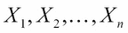的子样本使用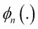的值。
的偏差和方差的方法，该估计量基于来自可用观测值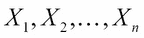的子样本使用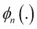的值。
刀切技术是的一种重采样方法，我们将在随后的讨论中制定其一般程序。如前所述， 是
是 的一个估计量。为了简单起见，我们用
的一个估计量。为了简单起见，我们用 来定义给定观测值的向量。设置该过程的重要量是伪值，接下来我们将对其进行数学定义。
来定义给定观测值的向量。设置该过程的重要量是伪值，接下来我们将对其进行数学定义。
定义:设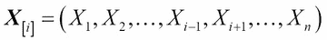，即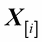是没有第 I 个观测的矢量 。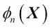的第个伪值定义如下:
。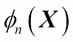的第个伪值定义如下:
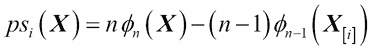
从数学上可以证明，伪值等价于以下内容:
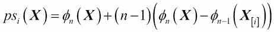
因此，伪值被视为的偏差校正版本 。这里定义的伪值也被称为删除-一个重叠。刀切法将伪值视为具有平均值
。这里定义的伪值也被称为删除-一个重叠。刀切法将伪值视为具有平均值 的独立观测值，然后应用中心极限定理进行统计推断。伪值的平均值和(采样)方差如下所示:
的独立观测值，然后应用中心极限定理进行统计推断。伪值的平均值和(采样)方差如下所示:
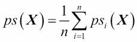
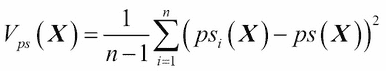
假设概率分布未知，直方图等可视化技术提示正态分布假设不合适。然而，我们也没有丰富的信息来为手头的问题制定一个合理的概率模型。在这里，我们可以很好地利用重叠技术。
我们将均值和方差估计量定义如下:
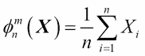
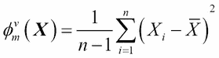
与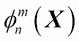和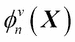相关联的伪值分别在以下表达式中给出:
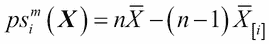
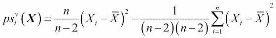
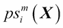的均值将是样本均值，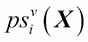的均值将是样本方差。但是，刀切法的应用在于细节。仅基于估计的平均值，我们将无法推断总体平均值，并且基于样本方差，我们将无法精确推断总体方差。为了了解这些伪值公式发生了什么，以及它们的方差将如何有用，接下来我们将设置一个优雅的 R 程序。
我们将使用一些尺度和形状参数模拟来自威布尔分布的 n = 1000 个观察值。在标准文献中，我们将能够找到这两个参数的估计值。然而，从业者很少对这些参数感兴趣，而更喜欢推断寿命的平均值和方差。密度函数是一种复杂的形式。此外，就尺度和形状参数而言，Weibull 随机变量的理论均值和方差很容易被发现过于复杂，并且涉及伽马积分的表达式对这种情况没有任何进一步的帮助。如果读者试图在搜索引擎中搜索 Weibull 分布平均值的字符串统计推断，结果将不会令人满意，并且不容易继续下去，除非是数学专家。在这个复杂的场景中，我们将看看重叠法是如何为我们化险为夷的。
在我们继续之前，先做一个记录。读者可能会想，在这个超级计算机器盛行的时代，谁会关心威布尔分布呢？然而，任何可靠性工程师都会保证寿命分布的有用性，威布尔是这一类的重要成员。第二点可能是正态近似对大样本也适用。然而，当我们有适度的样本来进行推断时，高度偏斜分布(如威布尔分布)的正态近似可能会失去检验的功效和置信度。此外，问题是，如果我们坚信基础分布是威布尔分布(没有参数)，那么获得威布尔分布的均值和方差的精确分布仍然是一项艰巨的数学任务。
R 程序将对给定原始数据的平均值和方差实施刀切技术:
> # Simulating observations from Weibull distribution
> set.seed(123)
> sr <- rweibull(1000,0.5,15)
> mean(sr); sd(sr); var(sr)
[1] 30.41584
[1] 69.35311
[1] 4809.854
正如在前面的模拟场景中提到的，我们播种是为了获得可重复的结果。rweibull功能有助于执行模拟威布尔分布观测值的任务。我们计算样本的平均值、标准差和方差。接下来，我们定义了能够计算平均值和方差的pseudovalues的pv_mean函数:
> # Calculating the pseudovalues for the mean
> pv_mean <- NULL; n <- length(sr)
> for(i in 1:n)
+ pv_mean[i] <- sum(sr)- (n-1)*mean(sr[-i])
> head(sr,20)
[1] 23.29756524 0.84873231 11.99112962 0.23216910 0.05650965
[6] 143.11046494 6.11445277 0.19432310 5.31450418 9.21784734
[11] 0.02920662 9.38819985 2.27263386 4.66225355 77.54961762
[16] 0.16712791 29.48688494 150.60696742 18.64782005 0.03252283
> head(pv_mean,20)
[1] 23.29756524 0.84873231 11.99112962 0.23216910 0.05650965
[6] 143.11046494 6.11445277 0.19432310 5.31450418 9.21784734
[11] 0.02920662 9.38819985 2.27263386 4.66225355 77.54961762
[16] 0.16712791 29.48688494 150.60696742 18.64782005 0.03252283
> mean(pv_mean); sd(pv_mean)
[1] 30.41584
[1] 69.35311
请注意，平均值和观察值的值和pseudovalues对于所有观察值都是相同的。事实上，这是意料之中的，因为我们看到的统计数据是平均值，也就是简单的平均值。从中移除其他观测值的平均值应该会得出该值。因此，pseudovalues的平均值和样本平均值也是相同的。然而，这并不意味着努力是徒劳的。我们将继续计算方差项，如下所示:
> # Calculating the pseudovalues for the variance
> pv_var <- NULL
> pseudo_var <- function(x,i){
+ n = length(x)
+ psv <- (n/(n-2))*(x[i]-mean(x))^2-(1/(n-1)*(n-2))*sum(x-mean(x))^2
+ return(psv)
+ }
> pv_var <- NULL
> for(i in 1:n)
+ pv_var[i] <- pseudo_var(sr,i)
> head(pv_var)
[1] 50.77137 875.96574 340.15022 912.87970 923.53596 12725.52973
> var(sr); mean(pv_var)
[1] 4809.854
[1] 4814.673
> sd(pv_var)
[1] 35838.59现在，在实际数据中没有对应于观察的pseudovalue。这里，pseudovalues的平均值将近似等于样本方差。这是标准偏差sd(pv_var)，它将有助于进行与方差或标准偏差相关的推断。
我们已经看到了刀切在推断均值和方差时是如何有用的。在本节的下一部分，我们将看到pseudovalues在解决生存回归问题时是如何有用的。
原发性胆汁性肝硬化数据pbc在第 1 章、综合技术介绍、第 2 节中进行了介绍，我们注意到该数据的特殊性在于其为存活数据，且感兴趣时间变量受到审查，这使得进一步分析变得复杂。处理生存数据的专门方法将在第 10 章、集合生存模型中讨论。专门的方法包括危险回归，协变量的影响是根据危险率而不是寿命来衡量的。据观察，从业者发现这些概念有点困难，因此我们将简要讨论一种基于伪值的替代方法。
Andersen 和 Klein 在一系列论文中有效地将伪值的概念用于各种问题:
> library(survival)
> library(pseudo)
> library(gee)
> data(pbc)
> time_pseudo <- pseudomean(time=pbc$time,event=pbc$status==2)
> pbc_gee <- gee(time_pseudo ~ trt + age + sex + ascites + hepato +
+ spiders + edema + bili + chol + albumin + copper +
+ alk.phos + ast + trig + platelet + protime + stage,
+ id=1:nrow(pbc), family="gaussian",
+ data=pbc)
Beginning Cgee S-function, @(#) geeformula.q 4.13 98/01/27
running glm to get initial regression estimate
(Intercept) trt age sexf ascites hepato
5901.1046673 115.5247130 -23.6893551 233.0351191 -251.2292823 -63.1776549
spiders edema bili chol albumin copper
-264.2063329 -441.2298926 -67.7863015 -0.5739644 438.5953357 -2.3704801
alk.phos ast trig platelet protime stage
-0.0619931 -1.1273468 0.2317984 -0.4243154 -160.6784722 -292.9838866
> summary(pbc_gee)
GEE: GENERALIZED LINEAR MODELS FOR DEPENDENT DATA
gee S-function, version 4.13 modified 98/01/27 (1998)
Model:
Link: Identity
Variance to Mean Relation: Gaussian
Correlation Structure: Independent
Call:
gee(formula = time_pseudo ~ trt + age + sex + ascites + hepato +
spiders + edema + bili + chol + albumin + copper + alk.phos +
ast + trig + platelet + protime + stage, id = 1:nrow(pbc),
data = pbc, family = "gaussian")
Summary of Residuals:
Min 1Q Median 3Q Max
-3515.1303 -792.8410 112.1563 783.9519 3565.1490
Coefficients:
Estimate Naive S.E. Naive z Robust S.E. Robust z
(Intercept) 5901.1046673 1.524661e+03 3.8704367 1.470722e+03 4.0123856
trt 115.5247130 1.616239e+02 0.7147750 1.581686e+02 0.7303895
age -23.6893551 8.507630e+00 -2.7844835 8.204491e+00 -2.8873643
sexf 233.0351191 2.701785e+02 0.8625227 3.215865e+02 0.7246421
ascites -251.2292823 4.365874e+02 -0.5754387 5.133867e+02 -0.4893568
hepato -63.1776549 1.884840e+02 -0.3351885 1.786614e+02 -0.3536166
spiders -264.2063329 1.986929e+02 -1.3297220 2.045738e+02 -1.2914962
edema -441.2298926 4.155360e+02 -1.0618331 4.850261e+02 -0.9097034
bili -67.7863015 2.651543e+01 -2.5564852 2.009844e+01 -3.3727151
chol -0.5739644 4.117889e-01 -1.3938317 3.929789e-01 -1.4605475
albumin 438.5953357 2.321347e+02 1.8894000 2.156405e+02 2.0339196
copper -2.3704801 1.120153e+00 -2.1162114 1.102365e+00 -2.1503594
alk.phos -0.0619931 3.932052e-02 -1.5766092 4.571919e-02 -1.3559535
ast -1.1273468 1.640940e+00 -0.6870130 1.797116e+00 -0.6273089
trig 0.2317984 1.416552e+00 0.1636356 1.375674e+00 0.1684980
platelet -0.4243154 9.348907e-01 -0.4538663 9.106646e-01 -0.4659403
protime -160.6784722 9.139593e+01 -1.7580484 9.254740e+01 -1.7361749
stage -292.9838866 1.137951e+02 -2.5746618 1.025891e+02 -2.8558966
Estimated Scale Parameter: 1675818
Number of Iterations: 1
Working Correlation
[,1]
[1,] 1在这一节中，我们将探讨复杂的统计泛函。两个随机变量相关的统计分布是什么？如果多元数据的正态假设不成立，那么还有什么方法可以获得标准误差和置信区间？Efron (1979)发明了 bootstrap 技术，该技术提供了实现与复杂统计泛函相关的统计推断的解决方案。在第 1 章、集成技术介绍中，介绍了排列测试，它重复抽取给定样本的样本，并对每个重样本进行测试。理论上，排列测试需要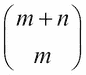数量的重采样，其中 m 和 n 是两个样本中的观察值数量，尽管在获得足够的重采样后，人们确实会松开油门。bootstrap 方法以类似的方式工作，是一种重要的重采样方法。
设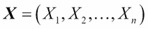是来自概率分布 F 的独立随机样本，感兴趣的参数是 ，参数的估计量用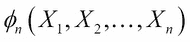表示。如果
，参数的估计量用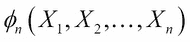表示。如果 参数的概率分布未知或难以处理，则无法进行关于该参数的统计推断。因此，我们需要一种通用的技术来帮助推断。
参数的概率分布未知或难以处理，则无法进行关于该参数的统计推断。因此，我们需要一种通用的技术来帮助推断。
Efron 的方法展开如下。提供的估计值是一个单一值。给定数据并基于我们有一个 IID 样本的假设，bootstrap 方法探索任何观察值与任何其他观察值一样可能的可能性。因此，用替换的抽取的大小为 n 的随机样本被直观地期望携带与实际样本相同的信息，并且我们可以基于该样本获得对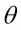参数的估计。然后，这个步骤可以重复很多次，我们将产生不同数量的参数估计。使用这种估计分布，可以进行统计推断。这种方法的正式描述是适当的。
从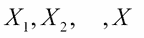中随机抽取替换尺寸为 n 的样品，并用 表示。样本被称为第个引导样本。计算该样本
表示。样本被称为第个引导样本。计算该样本 的估计值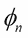，并用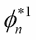表示。多次重复这些步骤，获得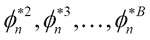。对
的估计值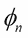，并用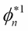表示。多次重复这些步骤，获得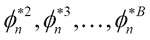。对 的推断可以基于自举估计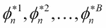。我们可以把这种描述以算法的形式表现出来:
的推断可以基于自举估计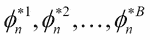。我们可以把这种描述以算法的形式表现出来:
步骤 5 在这里传达了什么？我们对每一个的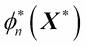值估计感兴趣的参数， B 的估计是精确的。由于估计值(基于样本)是 ，我们(直觉地)预期自举估计值的平均值
，我们(直觉地)预期自举估计值的平均值 将非常接近
将非常接近 ，因此自举估计值的方差也给出了估计值方差的“良好”度量。然后，自举平均值和标准差计算如下:
，因此自举估计值的方差也给出了估计值方差的“良好”度量。然后，自举平均值和标准差计算如下:
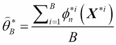
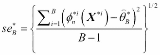
利用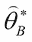和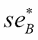，我们可以对 进行推理。
进行推理。
应该注意的是， bootstrap 方法是一种非常通用的算法，它的执行是为了解决面临某些有趣问题时的情况。
这里需要阐明替换抽样的概念。为了简单起见，假设我们只有五个观察值，例如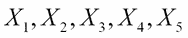。现在，当我们抽取替换大小为 5 的第一个 bootstrap 样本时，我们可能会得到标签 2 、 4 、 4 、 1 、 3 。这意味着，从原始样本中，我们选择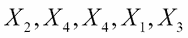，因此标记为 2 、 1 和 3 的观察值被选择一次，而 4 被选择两次。这个和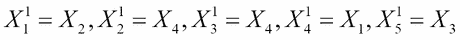一样。在 bootstrap 符号中，应该是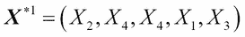。第二个引导可能是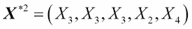，第三个可能是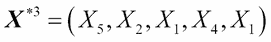，依此类推。
接下来，我们将举例说明这种技术，并阐明它的实现。自举方法将应用于两个问题:
考虑一个假设的场景，我们试图研究两个变量之间的关系。历史信息、直觉和散点图都是一致的，表明这两个变量之间存在线性关系，唯一的问题是这两个变量的直方图都显示出一种形状，而不是钟形。换句话说，正态分布的假设看起来不太可能，因为它在(每个变量的)单变量情况下失败，分析师对两个变量的联合双变量正态性持怀疑态度。
设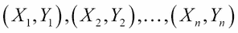为 n 对观测值。使用以下公式可以轻松计算样本相关系数:
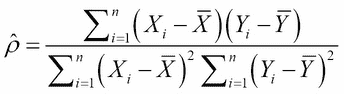
这里我们有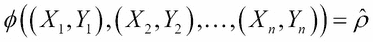。如果我们不能进行相关的统计推断，任何参数的估计都是没有用的。置信区间与相关结果一起足以执行统计推断。我们现在将学习自举方法如何帮助我们做到这一点。我们将使用向量符号来保持一致性，并朝着这个方向定义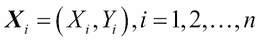，即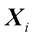现在是一个向量。第一个 bootstrap 样本是通过随机选择 n 对观测值并替换得到的，我们将用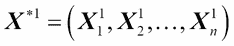来表示第一个 bootstrap 样本。现在，使用 bootstrap 样本，我们将通过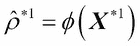来估计相关系数。多次重复获取自举样本B–1的过程，我们将计算相关系数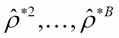。
这里使用的法学院数据来自 Efron 和 Tibshirani (1990 年，第 19 页)的表 3.1。在这项研究中，从 82 所法学院中随机选择了 15 所。为这些学校测量的两个变量包括国家法律考试(LSAT)的班级平均分和本科平均绩点(GPA)。我们将首先从 CSV 文件导入数据，显示它，然后可视化两个变量的直方图以及散点图:
> LS <- read.csv("../Data/Law_School.csv",header=TRUE)
> LS
School LSAT GPA
1 1 576 3.39
2 2 635 3.30
3 3 558 2.81
13 13 545 2.76
14 14 572 2.88
15 15 594 2.96
> windows(height=100,width=100)
> layout(matrix(c(1,2,3,3),byrow=TRUE, nrow=2))
> hist(LS$LSAT,xlab="LSAT",main="Histogram of LSAT")
> hist(LS$GPA,xlab="GPA",main="Histogram of GPA")
> plot(LS[,2:3],main="Scatter plot between LSAT and GPA")我们将首先查看代码。read.csv文件有助于从章节的Data文件夹中导入数据集，该数据集是从代码包中解压缩出来并存储在LS对象中的。然后LS显示在控制台上。在这里，我们给出第一个和最后三个观察值。windows功能用指定的height和weight创建一个新的图形设备。请注意，该功能只能在 Windows 操作系统上使用。接下来，我们为图形设备指定layout。为了确认它正在工作，运行 R 终端中的线路matrix(c(1,2,3,3),byrow=TRUE, nrow=2)会得到以下结果:
> matrix(c(1,2,3,3),byrow=TRUE, nrow=2)
[,1] [,2]
[1,] 1 2
[2,] 3 3这意味着第一个图形输出，作为运行任何产生图形的代码的结果，显示在设备的区域 1(左上角)。第二个图形输出显示在右上部分，而第三个将分布在下部分。对于视觉显示来说，这是一种方便的操作。这两个变量的直方图并不表明正态分布，尽管它可能被认为是观察的数量要少得多；在这种情况下是 15。然而，散点图表明，随着LSAT的增加，GPA也会增加。因此，相关系数是两个变量之间线性关系的一个有意义的度量。然而，正态分布假设在这里是不合适的，或者至少我们需要更多的目前还不可用的观测数据，因此进行统计推断仍然是一个挑战。为了克服这一点，我们将使用自举技术。看一下下图:
模仿 Efron 和 Tibshirani 的图解，我们把 bootstrap 样本数固定在 3200，bootstrap 样本数在 25，50，100，200，400，800，1600，3200 的时候我们会感兴趣。R 编程方法如下:
- 在找到观察值的数量、固定自举样本的数量以及感兴趣的自举样本后，我们将初始化自举均值和标准向量。
- 为了复制结果，我们将初始种子固定为 54321。种子将以 1 的增量递增，以获得引导样本，这将确保所有的引导样本都是不同的。
- 为每个引导样本计算相关系数的值，因此我们将有 B = 3200 个相关系数。
- 计算相关系数的平均值和标准偏差，直到期望的自举样本数。
- 为了与 Efron 和 Tibshirani (1990 年，第 50 页)进行比较，报告了自举样本 25、50、100、200、400、800、1600 和 3200 的结果。
R 程序及其输出如下所示:
> n <- nrow(LS)
> B <- 3200
> TB <- c(25,50,100,200,400,800,1600,3200)
> seB <- NULL
> tcorr <- NULL
> myseed <- 54321
> for(i in 1:B){
+ myseed <- myseed+1
+ set.seed(myseed)
+ tcorr[i] <- as.numeric(cor(LS[sample(1:n,n,replace=TRUE),2:3])[1,2])
+ }
> for(j in 1:length(TB)) seB[j] <- sd(tcorr[1:TB[j]])
> round(seB,3)
[1] 0.141 0.124 0.115 0.135 0.133 0.132 0.133 0.131
> for(j in 2:B){
+ corrB[j] <- mean(tcorr[1:j])
+ seB[j] <- sd(tcorr[1:j])
+ }
> round(corrB[TB],3)
[1] 0.775 0.787 0.793 0.777 0.782 0.773 0.771 0.772
> round(seB[TB],3)
[1] 0.141 0.124 0.115 0.135 0.133 0.132 0.133 0.131
> plot.ts(seB,xlab="Number of Bootstrap Samples",
+ ylab="Bootstrap Standard Error of Correlation")时间序列图显示如下:
可以看到相关系数的标准误差稳定在0.13左右。最后，为了进行统计推断，我们可以使用 bootstrap 置信区间。一种naïve方法是简单地获得 bootstrap 样本中相关系数估计的 95%覆盖率。这在软件中很容易实现。我们将使用分位数函数来获得结果，如下所示:
> for(i in 1:length(TB)) print(quantile(tcorr[1:TB[i]],c(0.025,0.975)))
2.5% 97.5%
0.5225951 0.9481351
2.5% 97.5%
0.5205679 0.9399541
2.5% 97.5%
0.5429510 0.9513826
2.5% 97.5%
0.4354776 0.9588759
2.5% 97.5%
0.4662406 0.9668964
2.5% 97.5%
0.4787843 0.9667736
2.5% 97.5%
0.4614067 0.9621344
2.5% 97.5%
0.4609731 0.9606689 我们已经学会了如何使用 bootstrap 技术进行统计推断。
在这里进行 bootstrap 方法的一个主要原因是我们不能假设 LSAT 和 GPA 变量的二元正态分布。现在，如果我们被告知 LSAT 和 GPA 的分布历史上遵循二元正态分布，那么技术上可以推导出样本相关系数的概率分布。但是，作为从业者，假设你无法推导出样本相关系数的概率分布。那么你如何进行统计推断呢？使用这里讨论的相同技术看起来很诱人。我们将在下一小节中继续探讨这个问题。
如前一小节所述，可能很容易实现通常的非参数自助法。然而，传统上认为非参数方法与参数方法相比效率较低。我们现在来看看这两种方法的混合。
我们已经看到，自举方法严重依赖于重采样。bootstrap 样本和随后的估计将符合真实的潜在概率分布。然而，除了一些参数之外，我们可能偶尔知道更多关于潜在概率分布的形状。混合这两种方法的方法需要修改。参数自举方法的设置和运行如下:
- 设
 是来自的 IID 样本，设表示基于适当方法的参数估计值，例如，最大似然估计或矩方法。
是来自的 IID 样本，设表示基于适当方法的参数估计值，例如，最大似然估计或矩方法。 - 模拟来自的大小为 n 的第一个 bootstrap 样本，并使用与上一步相同的估计技术基于获得第一个 bootstrap 估计值。
- 根据 bootstrap 样本，重复上述步骤B–1多次，分别得到。
- 根据 B bootstrap 估计进行推断。
将使用前面的LSAT和GPA变量的例子来说明参数自举技术。对于二元正态分布，均值向量是总体均值的估计量，它具有无偏估计和极大似然估计的统计性质。同样，样本方差-协方差矩阵也给出了总体方差-协方差矩阵的一个重要估计。对数据帧应用colMeans以获得向量平均值，并应用var函数来计算样本方差-协方差矩阵。R 代码块很容易跟随:
> LS_mean <- colMeans(LS[,2:3])
> LS_var<- var(LS[,2:3])
> LS_mean; LS_var
LSAT GPA
600.266667 3.094667
LSAT GPA
LSAT 1746.780952 7.9015238
GPA 7.901524 0.0592981因此，我们有均值和方差-协方差矩阵估计。我们现在来看看参数自举计算。现在，使用mvtnorm包中的rmvnorm函数，我们能够模拟多变量(双变量)正态分布的观测值。有了(参数)bootstrap 样本，剩下的程序和结论是相似的。带有结果图的完整 R 程序如下:
> TB <- c(25,50,100,200,400,800,1600,3200)
> ptcorr <- NULL
> ptcorrB <- NULL
> pseB <- NULL
> myseed <- 54321
> for(i in 1:B){
+ myseed <- myseed+1
+ set.seed(myseed)
+ temp <- rmvnorm(n,LS_mean,LS_var)
+ ptcorr[i] <- as.numeric(cor(temp)[1,2])
+ }
> for(j in 2:B){
+ ptcorrB[j] <- mean(ptcorr[1:j])
+ pseB[j] <- sd(ptcorr[1:j])
+ }
> round(ptcorrB[TB],3)
[1] 0.760 0.782 0.772 0.761 0.766 0.763 0.762 0.766
> round(pseB[TB],3)
[1] 0.129 0.114 0.109 0.129 0.118 0.117 0.120 0.120
> windows(height=100,width=100)
> plot.ts(pseB,xlab="Number of Bootstrap Samples",
+ ylab="Parametric Bootstrap Standard Error of Correlation")
> for(i in 1:length(TB)) print(quantile(ptcorr[1:TB[i]],c(0.025,0.975)))
2.5% 97.5%
0.4360780 0.9048064
2.5% 97.5%
0.5439972 0.9211768
2.5% 97.5%
0.5346929 0.9200953
2.5% 97.5%
0.4229031 0.9179324
2.5% 97.5%
0.4650078 0.9194452
2.5% 97.5%
0.4747372 0.9214653
2.5% 97.5%
0.4650078 0.9245066
2.5% 97.5%
0.4662502 0.9241084 参数 bootstrap 和非参数 bootstrap 之间的差异很容易看出。置信区间非常短，随着 bootstrap 样本数量的增加，标准误差降至零。尽管有这样的优势，当参数方法失效时，我们通常需要 bootstrap 方法。看一下下图:
接下来，我们将考虑 bootstrap 方法应用的一个稍微复杂的问题。
多元统计是统计学的一个分支，它处理随机变量的向量。在前面的例子中，我们有二元数据，其中 LSAT 和 GPA 分数是从 15 所学校获得的。现在我们将考虑另一个例子，其中我们有两个以上的变量；也就是说，我们在这里有五个观察结果。描述和自举技术相关的细节来自 Efron 和 Tibshirani (1990)的第 7 章、一般系综技术。本章讨论了 Mardia，Kent 和 Bibby (1979)的经典多变量书籍中的分数数据。
符号的简要说明如下。我们将用表示随机变量的向量，对于具有观测值的，向量将为。这里，每个分量 Xi 都被假设为一个连续的随机变量。大多数情况下，出于实践和理论目的，我们假设随机向量遵循多元正态分布，具有均值向量和方差-协方差矩阵。因为在这里深入多元统计的细节是不可行的，感兴趣的读者可以简单地查阅 Mardia，Kent 和 Bibby (1979)的资料。
在本例中， n = 88 记录了学生在力学、向量、代数、分析和统计这五个科目上的分数，测试中的另一个区别是，前两个科目力学和向量是闭卷测试，而代数、分析和统计是开卷测试。我们将首先执行简单的初步任务，计算平均向量、方差-协方差矩阵和相关矩阵:
> OC <- read.csv("../Data/OpenClose.csv")
> pairs(OC)
> OC_xbar <- colMeans(OC)
> OC_xbar
MC VC LO NO SO
38.95455 50.59091 50.60227 46.68182 42.30682
> OC_Cov <- cov(OC)
> OC_Cov
MC VC LO NO SO
MC 305.7680 127.22257 101.57941 106.27273 117.40491
VC 127.2226 172.84222 85.15726 94.67294 99.01202
LO 101.5794 85.15726 112.88597 112.11338 121.87056
NO 106.2727 94.67294 112.11338 220.38036 155.53553
SO 117.4049 99.01202 121.87056 155.53553 297.75536
> OC_Cor <- cor(OC)
> OC_Cor
MC VC LO NO SO
MC 1.0000000 0.5534052 0.5467511 0.4093920 0.3890993
VC 0.5534052 1.0000000 0.6096447 0.4850813 0.4364487
LO 0.5467511 0.6096447 1.0000000 0.7108059 0.6647357
NO 0.4093920 0.4850813 0.7108059 1.0000000 0.6071743
SO 0.3890993 0.4364487 0.6647357 0.6071743 1.0000000这里，数据从一个.csv文件导入，使用colMeans、cov和cor函数，我们获得均值向量、方差-协方差矩阵和相关矩阵。显然，我们可以从相关矩阵的输出中看到，所有变量之间存在着强关联。数据的可视化描述是通过pairs函数获得的，它给出了一个散点图矩阵。这个情节如下:
降维是多元统计的目标之一。在给定大量变量的情况下，降维的目的是找到一组能够解释总体数据中大部分可变性的变量。降维的一种方法是主成分分析。这里，我们尝试寻找一个新的随机向量，它是主成分的一个向量。这个新随机向量的每个分量是原始变量的某种线性组合，这将实现两个目标:(a)分量将被排序，即第一个分量的方差大于第二个分量的方差，第二个分量大于第三个分量的方差，依此类推，以及(b)每个主分量与其他分量不相关。主成分的核心工作与方差-协方差矩阵或相关矩阵的eigen值联系在一起。方差-协方差矩阵的eigen值表示相关主成分的重要性。因此，如果有 p 个相关的随机变量，并且估计的方差-协方差矩阵不是奇异的，归一化的 p eigen值将给出由主成分解释的变化的分数。出于数据的目的，我们将在这里解释这一点:
> OC_eigen <- eigen(OC_Cov)
> OC_eigen$values
[1] 686.98981 202.11107 103.74731 84.63044 32.15329
> OC_eigen$vectors
[,1] [,2] [,3] [,4] [,5]
[1,] -0.5054457 0.74874751 -0.2997888 0.296184264 -0.07939388
[2,] -0.3683486 0.20740314 0.4155900 -0.782888173 -0.18887639
[3,] -0.3456612 -0.07590813 0.1453182 -0.003236339 0.92392015
[4,] -0.4511226 -0.30088849 0.5966265 0.518139724 -0.28552169
[5,] -0.5346501 -0.54778205 -0.6002758 -0.175732020 -0.15123239
> OC_eigen$values/sum(OC_eigen$values)
[1] 0.61911504 0.18214244 0.09349705 0.07626893 0.02897653第一个eigen值是686.9898，第二个是202.1111，以此类推。现在，这些值除以它们的累积和，得到由主成分解释的数据的变化百分比。因此，第一主成分解释的数据总变异为 61.91%，而第二主成分解释的数据总变异为 18.21%。重要的问题来了:我们如何进行与这个量相关的统计推断？自然，我们将使用自举方法给出答案:
> thetaB <- NULL; sethetaB <- NULL
> B <- 500
> n <- nrow(OC)
> myseed <- 54321
> for(i in 1:B){
+ myseed <- myseed+1
+ set.seed(myseed)
+ OCt <- OC[sample(1:n,n,replace=TRUE),]
+ OCt_eigen <- eigen(cov(OCt))
+ thetaB[i] <- max(OCt_eigen$values)/sum(OCt_eigen$values)
+ }
> for(j in 2:B){
+ thetaB[j] <- mean(thetaB[1:j])
+ sethetaB[j] <- sd(thetaB[1:j])
+ }
> plot.ts(sethetaB,xlab="Number of Bootstrap Samples",
+ ylab="Bootstrap Standard Error for First Principal Component")
95%的 bootstrap 置信区间以通常的方式获得:
> TB <- seq(50,500,50)
> for(i in 1:length(TB)) print(quantile(thetaB[1:TB[i]],c(0.025,0.975)))
2.5% 97.5%
0.6300403 0.6478871
2.5% 97.5%
0.6330791 0.6424721
2.5% 97.5%
0.6342183 0.6401195
2.5% 97.5%
0.6348247 0.6394432
2.5% 97.5%
0.6348774 0.6392892
2.5% 97.5%
0.6352836 0.6391456
2.5% 97.5%
0.6357643 0.6390937
2.5% 97.5%
0.6360647 0.6388585
2.5% 97.5%
0.6360818 0.6387047
2.5% 97.5%
0.6361244 0.6386785 一般来说，B = 25 次引导复制就足够了，很少需要超过200次复制。关于这方面的更多信息，见 Efron 和 Tibshirani (1990 年，第 52 页)。
到目前为止，我们已经使用了模拟、重采样和循环来实现自举推理。然而，在本章前面我们提到了boot包。在下一节中，我们将使用这个包作为一些示例，并演示它的用法。
boot包是核心 R 包之一，它是为 bootstrap 方法的实现而优化的。在前面的例子中，我们主要使用循环来实现重采样技术。在这里，我们将看看如何使用boot R 包。
引导功能的主要结构如下:
boot(data, statistic, R, sim = "ordinary", stype = c("i", "f", "w"),
strata = rep(1,n), L = NULL, m = 0, weights = NULL,
ran.gen = function(d, p) d, mle = NULL, simple = FALSE, ...,
parallel = c("no", "multicore", "snow"),
ncpus = getOption("boot.ncpus", 1L), cl = NULL)该函数的中心参数是data、statistic、R和stype。与大多数 R 函数一样，data参数是标准参数。statistic是实现boot功能的最重要参数，该功能将应用于从data帧获得的自举样本。参数R(而非软件)用于指定要抽取的引导样本数，而stype将指示statistic的第二个参数。对于使用boot函数完成的任何推断，关键任务是为统计定义函数。我们将继续使用早期的例子来说明。
在研究LSAT和GPA变量之间的相关性时，诀窍是定义包含相关系数函数和数据的函数，数据的索引指定方式将为我们提供 bootstrap 样本。在声明了用于计算引导样本的相关系数的函数之后，我们使用引导函数，引入该函数，并指定重采样类型以及所需引导样本的数量。boot功能现在将开始运行:
> corx <- function(data,i) cor(data[i,1],data[i,2])
> corboot <- boot(data=LS[,2:3],statistic=corx,R=200,stype="i")
> corboot
ORDINARY NONPARAMETRIC BOOTSTRAP
Call:
boot(data = LS[, 2:3], statistic = corx, R = 200, stype = "i")
Bootstrap Statistics :
original bias std. error
t1* 0.7763745 -0.01791293 0.1357282通过corx定义关联函数，用数据帧LS对其应用引导函数。自举样本的数量是200，并且重采样将一直进行到下一次迭代。从前面的输出我们可以得到统计值为0.7763745，偏差为-0.01791293，自举标准误差为。但是偏见呢？到目前为止，我们在讨论中几乎没有提到偏见。为了理解什么是自举偏差，我们将首先查看拟合的corboot boot对象的组件。统计值(此处为相关系数)存储为t0，即t中的 bootstrap 样本估计值(其中的R),使用这两个量我们将找到偏差:
> corboot$t0
[1] 0.7763745
> corboot$t
[,1]
[1,] 0.8094277
[2,] 0.7251170
[3,] 0.7867994
[4,] 0.7253745
[5,] 0.7891611
[196,] 0.9269368
[197,] 0.8558334
[198,] 0.4568741
[199,] 0.6756813
[200,] 0.7536155
> mean(corboot$t)-corboot$t0
[1] -0.01791293我们可以看到boot函数对于应用程序是多么有用。可以在corboot对象上点击confint函数，得到 bootstrap 置信区间:
> confint(corboot)
Bootstrap quantiles, type = bca
2.5 % 97.5 %
1 0.3294379 0.9441656接下来，我们将应用boot函数来解决获得第一主成分解释的变异的置信区间的问题。为此，我们首先创建可以提供给引导函数的必要的R函数:
> Eigen_fn <- function(data,i) {
+ eig <- eigen(cov(data[i,]))
+ val <- max(eig$values)/sum(eig$values)
+ val
+ }
> eigenboot <- boot(data=OC,statistic = Eigen_fn,R=200,stype = "i")
> eigenboot
ORDINARY NONPARAMETRIC BOOTSTRAP
Call:
boot(data = OC, statistic = Eigen_fn, R = 200, stype = "i")
Bootstrap Statistics :
original bias std. error
t1* 0.619115 -0.0002657842 0.0488226
> confint(eigenboot)
Bootstrap quantiles, type = bca
2.5 % 97.5 %
1 0.5242984 0.7130783因此，可以有效地使用引导包，而不需要写循环。我们使用 bootstrap 方法的主要目的是估计参数及其函数。接下来将介绍基于 bootstrap 的假设检验。
我们从比较均值的 t 检验和比较方差的 F 检验开始自助假设检验问题。不言而喻，由于我们假设比较的两个总体呈正态分布，因此检验统计量的分布特性是众所周知的。为了基于 t 检验对 t 统计量进行非参数 bootstrap，我们首先定义函数，然后在 Galton 数据集上运行 bootstrap 函数 boot。Galton 数据集可从RSADBE包的galton data.frame中获得。galton数据集由928对观察值组成，这对观察值由父母的身高和孩子的身高组成。首先，我们定义t2函数，加载 Galton 数据集，并运行引导函数，如下所示:
> t2 <- function(data,i) {
+ p <- t.test(data[i,1],data[i,2],var.equal=TRUE)$statistic
+ p
+ }
> data(galton)
> gt <- boot(galton,t2,R=100)
> gt
ORDINARY NONPARAMETRIC BOOTSTRAP
Call:
boot(data = galton, statistic = t2, R = 100)
Bootstrap Statistics :
original bias std. error
t1* -2.167665 0.03612774 0.6558595
> confint(gt)
Bootstrap quantiles, type = percent
2.5 % 97.5 %
1 -3.286426 -0.5866314
Warning message:
In confint.boot(gt) :
BCa method fails for this problem. Using 'perc' instead
> t.test(galton[,1],galton[,2],var.equal=TRUE)
Two Sample t-test
data: galton[, 1] and galton[, 2]
t = -2.1677, df = 1854, p-value = 0.03031
alternative hypothesis: true difference in means is not equal to 0
95 percent confidence interval:
-0.41851632 -0.02092334
sample estimates:
mean of x mean of y
68.08847 68.30819 读者应比较 bootstrap 置信区间和 t 统计量给出的置信区间。
接下来，我们将对方差进行 bootstrap 假设检验。方差函数是为var.test函数定义的，它将在boot函数中使用:
> v2 <- function(data,i) {
+ v <- var.test(data[i,1],data[i,2])$statistic
+ v
+ }
> gv <- boot(galton,v2,R=100)
> gv
ORDINARY NONPARAMETRIC BOOTSTRAP
Call:
boot(data = galton, statistic = v2, R = 100)
Bootstrap Statistics :
original bias std. error
t1* 1.984632 -0.002454309 0.1052697
> confint(gv)
Bootstrap quantiles, type = percent
2.5 % 97.5 %
1 1.773178 2.254586
Warning message:
In confint.boot(gv) :
BCa method fails for this problem. Using 'perc' instead
> var.test(galton[,1],galton[,2])
F test to compare two variances
data: galton[, 1] and galton[, 2]
F = 1.9846, num df = 927, denom df = 927, p-value < 2.2e-16
alternative hypothesis: true ratio of variances is not equal to 1
95 percent confidence interval:
1.744743 2.257505
sample estimates:
ratio of variances
1.984632 读者可以比较置信区间和 bootstrap 置信区间。bootstrap 方法已经针对不同的估计和假设检验场景进行了演示。在余下的章节中，我们将考虑一些回归模型，在这些模型中，我们有关于解释变量的观察结果的附加信息。
在第 1 章、集成技术介绍中介绍的US Crime 数据集是为什么线性回归模型可能是一个很好的拟合的例子。在本例中，我们感兴趣的是了解犯罪率(R)作为 13 个相关变量的函数，如平均年龄、南部州指标等。数学上，线性回归模型如下:
这里， 是 p-协变量，
是 p-协变量， 是截距项，
是截距项， 是回归系数，
是回归系数， 是假设遵循正态分布的误差项。协变量可以写成向量形式，带有观察值的可以概括为
是假设遵循正态分布的误差项。协变量可以写成向量形式，带有观察值的可以概括为 ，其中。假设 n 个观察值是随机独立的。线性回归模型在许多经典回归书中都有详细介绍；例如，见德雷珀和史密斯(1999 年)。Ciaburro (2018)最近出版了一本书，详细介绍了 R 中线性回归模型的实现。正如读者可能已经猜到的，我们现在将对美国犯罪数据集拟合一个线性回归模型来开始讨论:
，其中。假设 n 个观察值是随机独立的。线性回归模型在许多经典回归书中都有详细介绍；例如，见德雷珀和史密斯(1999 年)。Ciaburro (2018)最近出版了一本书，详细介绍了 R 中线性回归模型的实现。正如读者可能已经猜到的，我们现在将对美国犯罪数据集拟合一个线性回归模型来开始讨论:
> data(usc)
> usc_Formula <- as.formula("R~.")
> usc_lm <- lm(usc_Formula,usc)
> summary(usc_lm)
Call:
lm(formula = usc_Formula, data = usc)
Residuals:
Min 1Q Median 3Q Max
-34.884 -11.923 -1.135 13.495 50.560
Coefficients:
Estimate Std. Error t value Pr(>|t|)
(Intercept) -6.918e+02 1.559e+02 -4.438 9.56e-05 ***
Age 1.040e+00 4.227e-01 2.460 0.01931 *
S -8.308e+00 1.491e+01 -0.557 0.58117
Ed 1.802e+00 6.496e-01 2.773 0.00906 **
Ex0 1.608e+00 1.059e+00 1.519 0.13836
Ex1 -6.673e-01 1.149e+00 -0.581 0.56529
LF -4.103e-02 1.535e-01 -0.267 0.79087
M 1.648e-01 2.099e-01 0.785 0.43806
N -4.128e-02 1.295e-01 -0.319 0.75196
NW 7.175e-03 6.387e-02 0.112 0.91124
U1 -6.017e-01 4.372e-01 -1.376 0.17798
U2 1.792e+00 8.561e-01 2.093 0.04407 *
W 1.374e-01 1.058e-01 1.298 0.20332
X 7.929e-01 2.351e-01 3.373 0.00191 **
---
Signif. codes: 0 '***' 0.001 '**' 0.01 '*' 0.05 '.' 0.1 ' ' 1
Residual standard error: 21.94 on 33 degrees of freedom
Multiple R-squared: 0.7692, Adjusted R-squared: 0.6783
F-statistic: 8.462 on 13 and 33 DF, p-value: 3.686e-07从summary输出可以看出，显示了许多关于拟合的线性回归模型的信息。从输出中，我们可以找到Estimate中估计的回归系数。这些估计量的标准误差在Std。Error、t value中 t 统计的对应值、Pr(>|t|)中的 p 值。我们可以进一步估计Residual standard error中的剩余标准差。同样，我们可以在Multiple R-squared和Adjusted R-squared中获得各自的倍数和调整后的 R 平方值，在F-statistic中获得总体 F 统计量，最后在p-value中获得模型 p 值。这些统计/数量/汇总中的许多具有清晰的统计属性，因此，可以进行关于参数的精确统计推断。然而，对他们中的少数人来说，情况并非如此。例如，如果有人询问调整后的 R 平方值的置信区间，作者就不能回忆起相应的统计分布。因此，利用 bootstrap 技术的便利，我们可以获得调整 R-square 的 bootstrap 置信区间。可能寻求调整的 R-square 的置信区间的原因是，它能够很好地解释模型在 Y 中解释的方差。让我们看看它在 R 软件中的实现。
对于复杂的问题，会有许多解决方案，但没有一个方案比另一个方案更有优势。然而，我们有两种主要的方法来执行线性回归模型的自举:(I)自举残差，和(ii)自举观测值。这两种方法也适用于任何一般的回归场景。在我们描述这两种方法之前，让表示的最小二乘估计，拟合的模型如下:
因此，我们也将对误差分布的方差项进行估计，并用表示。用定义残差的向量。然后在以下步骤中执行剩余自举方法:
引导观察值是通常的引导方法，它不需要任何进一步的解释。然而， 的等级可能会受到影响，特别是如果协变量是离散变量，并且只选择了一个因子。因此，对于任何回归问题，自举残差是最好的方法。
的等级可能会受到影响，特别是如果协变量是离散变量，并且只选择了一个因子。因此，对于任何回归问题，自举残差是最好的方法。
常规的boot包没有用，我们将使用car包中的Boot函数对线性回归模型进行 bootstrap 分析。Boot函数也需要是一个指定的函数，其输出将给出所需的统计值。因此，我们将首先定义一个函数f，它将返回调整后的 R 平方值:
> f <- function(obj) summary(obj)$adj.r.squared
> usc_boot <- Boot(usc_lm,f=f,R=100)
> summary(usc_boot)
R original bootBias bootSE bootMed
V1 100 0.67833 0.096618 0.089858 0.79162
> confint(usc_boot)
Bootstrap quantiles, type = bca
2.5 % 97.5 %
V1 0.5244243 0.7639986
Warning message:
In norm.inter(t, adj.alpha) : extreme order statistics used as endpoints因此，调整后的 R 平方的 95%引导置信区间为(0.5244243, 0.7639986)。类似地，与线性回归模型的任何其他参数相关的推断可以使用 bootstrap 技术进行。
在第一部分中，我们研究了伪值在进行与生存数据相关的推断中的作用。使用伪值背后的主要思想是用适当的(预期)值代替不完整的观测值，然后使用广义估计方程的灵活框架。生存分析及其相关的专门方法将在本书第十章、集合生存模型中详述。我们将在此简要介绍设置参数所需的符号。设 T 表示生存时间，或者到感兴趣事件的时间，我们自然有，这是一个连续的随机变量。假设寿命累积分布为 F，关联的密度函数为 f 。由于寿命 T 对于一些观察结果来说是不完整的，并且受到审查，我们将不能正确地推断出有趣的参数，如平均存活时间或中位存活时间。由于审查会带来额外的复杂性，在这里注意到我们将大量借用第 10 章、集合生存模型中的材料就足够了。
Tip
*第一次阅读时，带星号的部分可以省略，或者如果你已经熟悉相关概念和术语，可以继续阅读。
boot包中的censboot函数用于处理存活数据。在pbc数据集中，感兴趣事件的时间是名为time 的变量，观察的完整性由status==2表示。需要包survival来创建能够处理生存数据的Surv对象。然后，survfit函数将给出生存函数的估计值，它是累积分布函数 1-F 的补充。众所周知，连续非负随机变量的均值是，中位生存时间是满足条件的时间点 u。由于survfit对象的summary可用于获得期望时间的生存概率，我们将使用它来寻找平均生存时间。所有这些参数都内置在Med_Surv函数中，该函数将返回平均存活时间。
使用Med_Surv函数作为censboot函数的公式/统计，我们将能够获得中位存活时间的 bootstrap 估计；随后，使用 bootstrap 估计，我们获得了中位生存时间的置信区间。R 程序和输出如下:
> Med_Surv <- function(data){
+ s2 <- survfit(Surv(time,status==2)~1,data=data)
+ s2s <- summary(s2)
+ s2median <- s2s$time[which.min(s2s$surv>0.5)]
+ s2median
+ }
> pbc2 <- pbc[,2:3]
> pbc_median_boot <- censboot(data=pbc2,statistic=Med_Surv,R=100)
> pbc_median_boot
CASE RESAMPLING BOOTSTRAP FOR CENSORED DATA
Call:
censboot(data = pbc2, statistic = Med_Surv, R = 100)
Bootstrap Statistics :
original bias std. error
t1* 3395 21.36 198.2795
> pbc_median_boot$t
[,1]
[1,] 3282
[2,] 3358
[3,] 3574
[4,] 3358
[5,] 3244
[96,] 3222
[97,] 3445
[98,] 3222
[99,] 3282
[100,] 3222
> confint(pbc_median_boot)
Bootstrap quantiles, type = percent
2.5 % 97.5 %
1 3090 3853
Warning message:
In confint.boot(pbc_median_boot) :
BCa method fails for this problem. Using 'perc' instead对于实际数据，估计的中位存活时间为3395天。中位存活时间的 95% bootstrap 置信区间为(3090, 3853)。
为了进行关于平均存活时间的推断，我们需要使用survival包中的survmean函数，并适当地提取估计的平均存活时间。Mean_Surv函数完成了这项任务。下面给出了 R 程序及其输出:
> Mean_Surv <- function(data,time){
+ s2 <- survfit(Surv(time,status==2)~1,data=data)
+ smean <- as.numeric(
+ survival:::survmean(s2,rmean=time)[[1]]["*rmean"])
+ smean
+ }
> censboot(data=pbc2,time=2000,statistic=Mean_Surv,R=100)
CASE RESAMPLING BOOTSTRAP FOR CENSORED DATA
Call:
censboot(data = pbc2, statistic = Mean_Surv, R = 100, time = 2000)
Bootstrap Statistics :
original bias std. error
t1* 1659.415 -3.582645 25.87415读者的任务是获得平均存活时间的 bootstrap 置信区间。下一节将讨论对时间序列数据使用 bootstrap 方法。
时间序列数据的示例见第 1 章、集合技术介绍、New Zealand Overseas数据集中。参见 Tattar 等人(2016)的第 10 章、集合生存模型。时间序列的独特之处在于观测值不是随机地相互独立的。例如，当天的最高温度不太可能独立于前一天的最高温度。然而，我们很可能认为，前十天的最高气温大多独立于六个月前的十天。因此，bootstrap方法被修改为block bootstrap方法。boot包中的tsboot函数对于引导时间序列数据非常有用。tsboot功能的主要结构如下:
tsboot(tseries, statistic, R, l = NULL, sim = "model",
endcorr = TRUE, n.sim = NROW(tseries), orig.t = TRUE,
ran.gen, ran.args = NULL, norm = TRUE, ...,
parallel = c("no", "multicore", "snow"),
ncpus = getOption("boot.ncpus", 1L), cl = NULL)这里，statistic，tseries是时间序列数据，是我们感兴趣的常用函数。R是自举复制的次数，l是块的长度，我们从时间序列数据中得出。现在，我们考虑估计自回归(AR)时间序列模型的方差的问题，我们将考虑 AR 模型的最大阶数order.max为 25。Var.fun函数将拟合最佳 AR 模型并获得方差。然后，该函数将被输入到tsboot，使用为每个引导样本计算的统计数据，我们将获得 95%的引导置信区间:
> Var.fun <- function(ts) {
+ ar.fit <- ar(ts, order.max = 25)
+ ar.fit$var
+ }
> ?AirPassengers
> AP_Boot <- tsboot(AirPassengers,Var.fun,R=999,l=20,sim="fixed")
> AP_Boot
BLOCK BOOTSTRAP FOR TIME SERIES
Fixed Block Length of 20
Call:
tsboot(tseries = AirPassengers, statistic = Var.fun, R = 999,
l = 20, sim = "fixed")
Bootstrap Statistics :
original bias std. error
t1* 906.1192 2080.571 1111.977
> quantile(AP_Boot$t,c(0.025,0.975))
2.5% 97.5%
1216.130 5357.558 因此，我们已经能够对时间序列数据应用bootstrap 方法。
详细讨论 bootstrap 方法的主要目的是为重采样方法奠定基础。我们用一种非常早期的重采样方法开始了这一章:刀切法。这种方法是为了多种情况而说明的，包括生存数据，这本来就很复杂。bootstrap 方法从看似简单的问题开始，然后我们立即将其应用于复杂的问题，如主成分和回归数据。对于回归数据，我们也说明了生存数据和时间序列数据的 bootstrap 方法。在下一章中，我们将看看 bootstrap 方法在决策树重采样中的核心作用，决策树是一种典型的机器学习工具。
 ，感兴趣的参数
，感兴趣的参数 ，计算估计值
，计算估计值 。
。 抽取尺寸为 n 的补充样本，用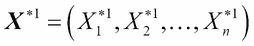表示。
抽取尺寸为 n 的补充样本，用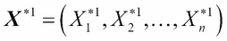表示。 相关的统计推断。
相关的统计推断。
 获得新的回归量。也就是说，是(第一个)bootstrap 样本 Y 值。
获得新的回归量。也就是说，是(第一个)bootstrap 样本 Y 值。 和协变量矩阵
和协变量矩阵 ，获得回归系数向量的第一个自举估计。
，获得回归系数向量的第一个自举估计。